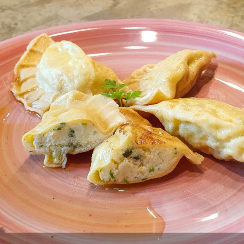

Hauptspeisen
Ritschert
Ein herzhaftes Eintopfgericht aus Gerste, Bohnen, Gemüse und Fleisch, das als traditionelles Gericht in Kärnten sehr beliebt ist.

Kärntner Kasnudeln
Traditionelle Teigtaschen, gefüllt mit einer Mischung aus Topfen, Kartoffeln, Kräutern und Minze, serviert mit zerlassener Butter.
